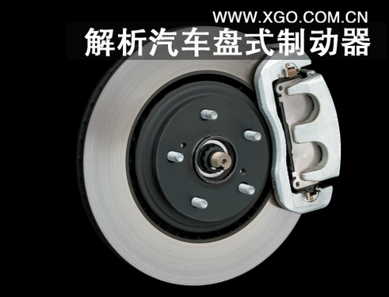

热稳定性更好 详细解析汽车盘式制动器
[汽车点评网 技术] 前面我们为大家介绍了几种常见的鼓式制动器，而在现实生活中，应用更多更值得信赖的刹车方式是盘式，也就是我们经常听到的“碟刹”，随着盘刹的优势逐渐被认可，因此制动器越来越多的开始采用了盘式刹车，今天我们就来简单的了解一下。

盘式刹车有什么优势之处呢？我们先来了解一下：
（1）盘式制动器无摩擦助势作用，制动力矩受摩擦系数的影响较小，即热稳定性好；
（2）盘式制动器浸水后效能降低较少，而且只须经一两次制动即可恢复正常，即基本不存在水衰退问题；
（3）在输出相同制动力矩的情况下，盘式制动器尺寸和质量一般较小；
（4）制动盘沿厚度方向的热膨胀量极小，不会像制动鼓的热膨胀那样使制动器间隙明显增加而导致制动踏板行程过大；
（5）较容易实现间隙自动调整，其他维修作业也较简便。
盘式制动器主要有钳盘式和全盘式两种，现代汽车上应用最多的就是钳盘式制动器，它的旋转元件是制动盘，固定元件是制动钳。而根据制动钳的运动方式又可分为定钳盘式制动器、滑动钳盘式制动器和钳盘式制动器，其中滑动钳盘式制动器应用更广。
钳盘式制动器的工作原理就类似于自行车上的刹车，在制动过程中，制动钳将制动块挤压到制动盘上，随着制动盘和衬块之间的摩擦逐渐的将速度降下来。而滑动钳盘式制动器就是制动钳可以相对制动盘作轴向滑动；只在制动盘的内侧设置油缸，而外侧的制动块则附装在钳体上。
主要通过制动钳上的压力，使得摩擦片夹住旋转的制动盘；
盘式制动器在使用过程中，也会出现故障，其中比较常见的有气阻、制动力不足和制动时有噪声等。
盘式制动器的发热部位集中在很窄的制动衬块上，其单位压力又比鼓式制动器大，制动衬块和钳体的活塞直接接触，因此制动时的热量极易传给制动液。这样，使盘式制动器容易产生气阻现象。但是，若采取相应的措施，也可防止气阻现象的发生。
植物油型制动液无法满足盘式制动器的使用要求，因此必须使用高沸点的合成制动液。但是，合成制动液具有吸水特性。在某些使用条件中，沸点下降很快。为防止制动液沸点的明显下降，一般常采用以下一些措施：
1、定期更换制动液。夏季3个月或行驶5000km；冬季6个月或行驶1000km后，即将制动液更新。2、不同性质的制动液不可互换使用或混用。3、密闭保存制动液。
盘式制动器制动力不足时，可采用下述方法予以解决：1、改变制动衬块材料，可换用稍软的制动衬块材料，使摩擦系数相对得到提高，制动力变大。 2、清除制动衬块排屑槽中的异物，如果制动衬块的排屑槽被异物覆盖，制动时将失却排出尘土、刮去水分的作用，使制动力降低。
制动时，若有“嗄吱、嗄吱”的噪声时，可采用下述方法排除：
1、在制动器钳体活塞和制动衬片之间，加一防噪声片，使活塞上形成一倾斜度。从而保证制动时制动衬块和制动盘柔性接触，使制动衬块在正常磨损状态下无异常噪声出现。2、选择材质软些、密度小些的制动衬块材料。3、制动时，制动衬块向一侧移动，可能出现撞击声响。这是由于制动衬块和钳体之间的间隙过大所致，可用镀覆焊锡的方法消除间隙。但须注意，应使焊锡镀覆在与行驶方向相反的一侧，防止在制动力的作用下失效。
点评：
今天我们简单的了解了盘式制动器的优势以及工作原理，以及日常制动过程中遇到的问题。它的优点是显而易见的，但也有一些缺点，例如液压制动是管路压力较高，因此需要伺服装置，而其在驻车制动中还需假装驻车传动装置，因为整体构造会很复杂，因此需要的成本也会增高，因此在一些价格较低的车上，会采取前轮盘刹后轮鼓刹的搭配方式。（文/汽车点评网 张丹）